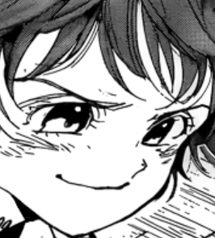
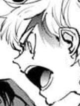
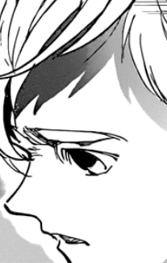

"I know him!"
"Well tough luck... those ruffians aren't someone you can take..." she ponders slightly.
If he's here then it means he knows the way out but you hesitate to inform the girl about it. 
"Well, he's someone important, right?"
"Yes, he is..."
"Then, save him!" she smiles enthusiastically, "No matter what it takes!"
Puffed up with determination you nod your head and check back at the street, they head north.
"We'll probably meet again someday!" she says.
"Yeah... we will!"
You put on your hoodie and head outside carefully. Then, you sprint past their direction and follow them closely behind. After some time, they've entered into a forest and into a cottage.
It seemed familiar, exactly like Nichola's house... But it can't be, this is a different world altogether. They enter in and you sneak below the glass window on the side of the house, hoping to hear something.
"Now give it here! Elixer or not, you're getting it!"
But, Nicholas disappears from their sight.
"It's the cottage's tricks..." you remember as he once made you cry doing it.
"He's below then."
Your eyes shift past tall hedges beside the worn-down cottage and find the exact hole he uses to sneakily get in. You get through.
Down the basement, you finally meet up with him and want to tell him how cool the trick was. However, instead of warm hellos and an eye smile, he grabs you by the shoulders and shouts at you softly. 
"You were told to stay on the path! You're going to ruin everything I've lived for."
"But, I, I came here to sav-"
Frustrated, his nostrils flare up and he sighs deeply. You still had a lot of questions but all these fade away. You don't tell him anything about what you've seen and he doesn't ask either. The ruffians above leave the cottage and soon enough, a familiar high pitched voice along with many others rustles in the forest beside. Its the girl.
"Those cowards again. We need to get out of here. Follow me." he takes a hidden stick and opens up a dirt tunnel behind some boxes. It was just like the ones you've seen before. Were these their tunnels or Nicholas?
He lights the stick, heads down a straight path, then another one leading down and before you knew it, you were falling. This was probably the 'way-out' the girl said. You land on the ground once again, feet first, but this time he heads upwards and opens a set of doors.
Now in a completely different but familiar set was the same cottage. Exactly how Nicholas's cottage is supposed to be. He hands you the potion and you give him mother's one.

"No, keep it. Tell your mother I won't be needing it."
"But why?"
"Whatever happens, happens. Now go."
This was no longer the same Nicholas you could trust and depend on. The insanity of the alternate world has completely changed him. There's no telling what he'll do to those other people...
"I have to save them."
To be continued...
There's more choices to select and more truth to be revealed.